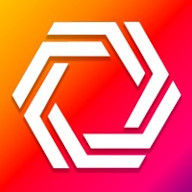
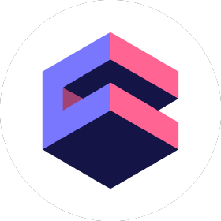
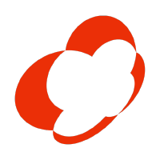

Principal Engineer
Full-time / Contract / C2C / Remote

12+ years experience
Open to relocation
Full-Stack
TypeScript, Node.Js, React, PHP, C++,
DevOps
CI/CD, Docker, GitLab, GitHub, Cube.dev, Kafka, MySQL, PostgreSQL
Cloud engineering
Kubernetes, AWS, Azure, Google cloud, Cost-optimization
At Nanoheal, as Principal Engineer, my focus has been on multi-tenant SaaS cloud projects, harnessing Kubernetes and cloud infrastructure to streamline deployments and enhance product demonstrations. The solutions developed under my leadership have significantly reduced deployment times, saving countless hours for our team and clients. The ability to deploy services rapidly for testing has not only accelerated development cycles but also fortified our product's reliability and scalability. Strong skils DevOps + Full-stack + cloud engineering allows me to get better result from contributing to code and infrustructure in the same time.
Top skillsTop skills
Team Management • Software Architecture • Cloud Computing • Full-Stack Development • DevOps
Work
- 
Principal Engineer @ Nanoheal
Mar 2022 - Present · 3 yrs 8 mos
Orem, Utah, United States · Remote
Development of a multi-tenant SaaS cloud project that provide web interface for managing kubernetes and deployments. It decreased deploying time, and now product-sales for product demonstration can deploy nanoheal software from our internal ui in one of the existed clusters in several minutes. It save a lot of working time for whole team. Developers and QA team can deploy all services from specified development brunches for testing.
Team Management, Kubernate and +43 other skills
- 
Senior Software Engineer @ Cube Dev
Aug 2020 - Mar 2021 · 8 mos
Vladivostok, Primorye, Russia · Remote
Work with Cube.js and cube.dev as a Full-stack developer (NodeJS, ReactJS, SQL). As a DevOps engineer, I worked with infrastructure to run Kubernetes clusters in Google Cloud and AWS.
Clean Coding, Message Queue and +28 skills
- 
Full-stack Developer @ Noveo Group
Oct 2019 - Aug 2020 · 11 mos
Paris, Île-de-France, France · Remote
React.JS, TypeScript and NodeJS development for a large SaaS project.
Clean Coding, English and +9 skills
Full-stack Developer @ SANCOM
Dec 2018 - Oct 2019 · 11 mos
Vladivostok, Primorye, Russia · Remote
Development and support of internal projects of the company. I developed a system for detecting answering machines in phone call records. This system uses an audio fingerprint for search to answering machine in the recording. Able to detect autoresponders in any language. It builds reports on the reason why unable to call to client. It already used to optimize the work of a several big call centers.
Technical Architecture, webrtc and +23 skills
Full Stack Developer
Feb 2017 - Nov 2018 · 1 yr 10 mos
Vladivostok, Primorye, Russia · On-site
I also have freelancing experience. I often receive orders for the development of chat. For example, I am engaged in chat support on the website of the Russian television channel OTR (https://otr-online.ru/online/) In general, during the study of the English language, I translated many of my articles and documentation from Russian to English (here is all the documentation on this site written by me https://comet-server.com/wiki/doku.php/en this took several years as I did in non-working hours)
Webrtc, Web Development and +10 skills
Education
Far Eastern Federal University (FEFU)
Specialist Degree (Software engineer), Computing systems complexes and networks
2010 - 2015
Grade: 4.9 from 5.0
Primorsky Polytechnic College
Secondary vocational education (Software engineer), Computer Programming
2006 - 2010
Grade: 5 (all-A graduate)
Projects
Development of a multi-tenant SaaS cloud project that provide web interface for managing kubernetes and deployments. It decreased deploying time, and now product-sales for product demonstration can deploy nanoheal software from our internal ui in one of the existed clusters in several minutes. It save a lot of working time for whole team. Developers and QA team can deploy all services from specified development brunches for testing.
It is a service providing a ready chat widget for message passing between website users. It suits for social networking websites, dating websites, and any other communities where it is important to give users a convenient mode of communication. It is possible to build the chat into Cordova app